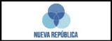

Principales Candidatos:
| Rodrigo Cháves Robles | |
| José María Figueres Olsen | |
| Gerardo Fabricio Avarado Muñoz |

|
| Maria Lineth Saborío Chaverri |

|
Resultados 2022:
| Partido | Candidato | Resultados Primera votación | Resultados Segunda votación |
|---|---|---|---|
| Rodrigo Cháves | 16,70% | 52,84% | |
| José María Figueres | 27,26% | 47,16% | |
|  | Fabricio Alvarado | 14,82% | N/A |
 |
Lineth Saborío | 12,36% | N/A |